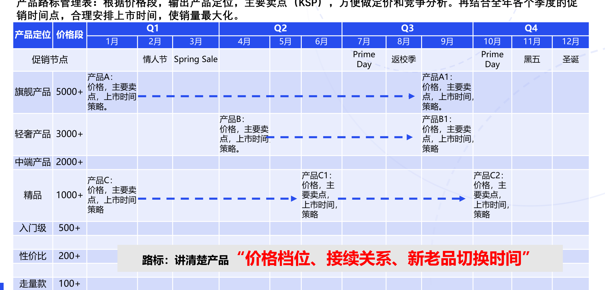
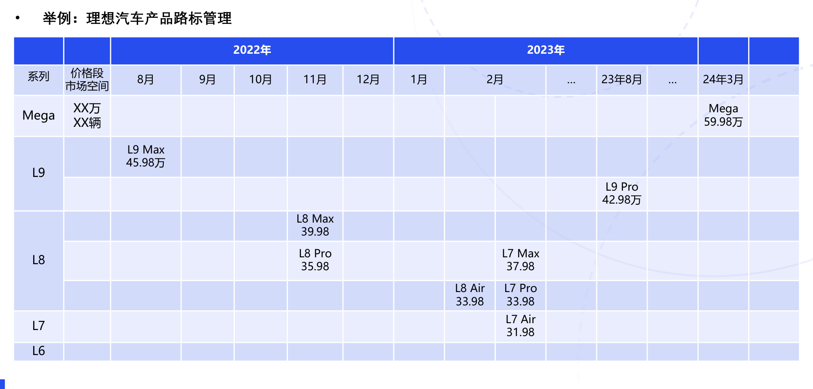
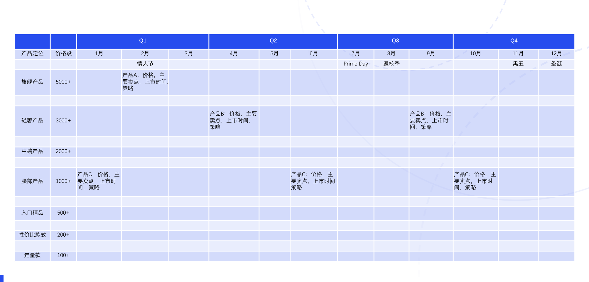
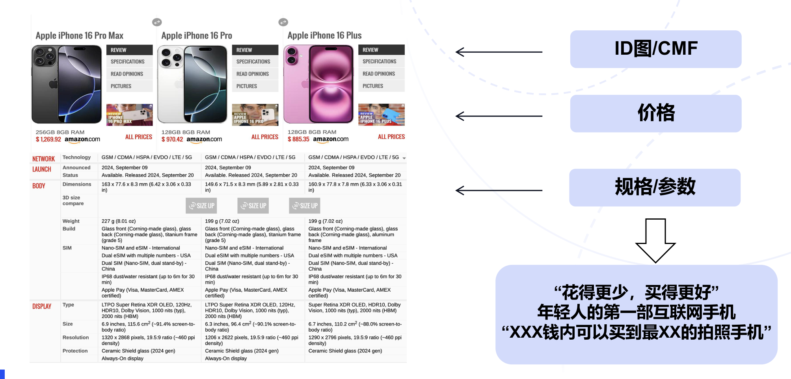
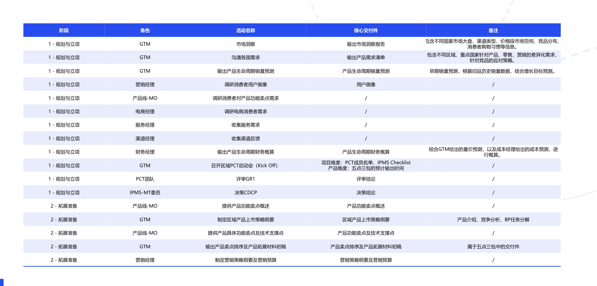
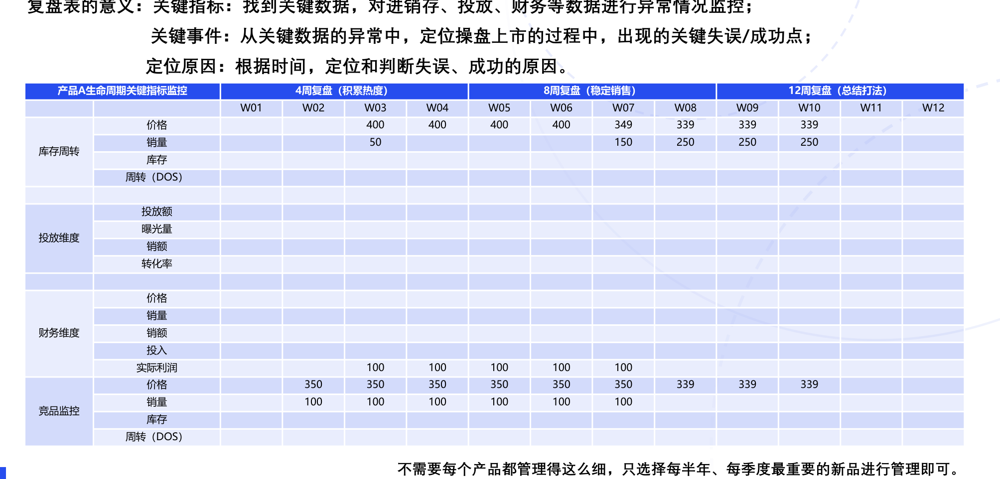
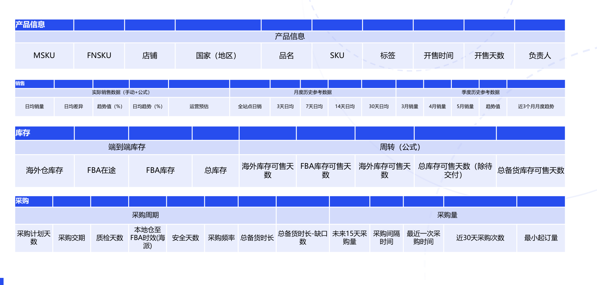
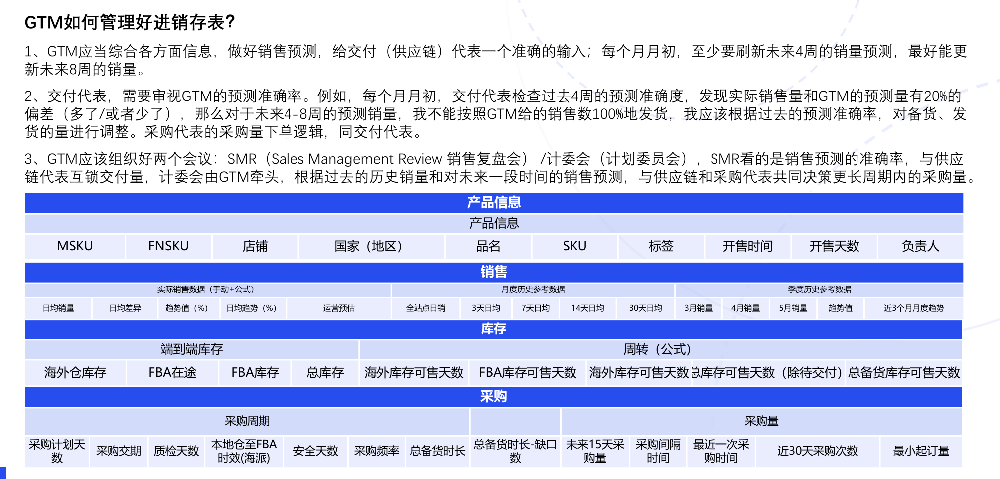
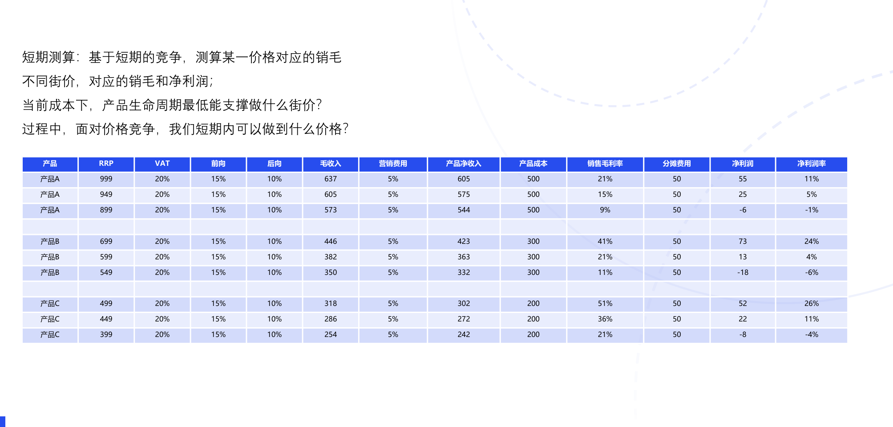
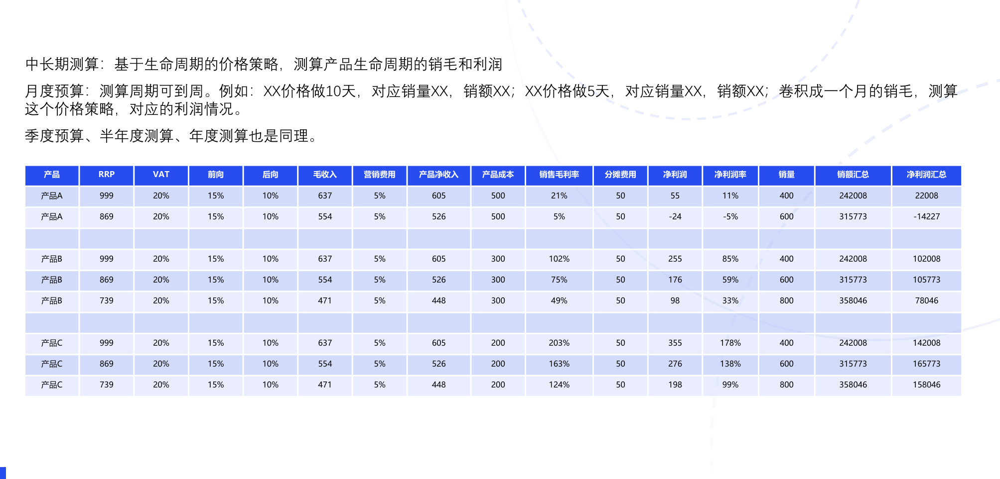

GTM PLAYBOOK / 03
操盘必备的三套表
把新品上市、进销存和产品经营连接为一套工作工具。
三套表分别解决什么问题
| 工具 | 要回答的问题 | 组成 |
|---|---|---|
| 新品上市管理表 | 怎样让新品上市与上量衔接？ | 产品组合与路标管理、竞争力分析、上市准备 Checklist、首销复盘。 |
| PSI 管理表 | 怎样随市场变化调整销售与库存？ | 销售管理、库存管理、长周期采购管理。 |
| 产品经营表 | 怎样围绕利润做资源决策？ | 单品测算、单品生命周期测算、多品类 BP 汇总。 |
新品上市管理表的四个部分
1、新品上市管理表：
（1）产品组合与路标管理表： 讲清楚产品价格档位，接续关系，新老品切换时间。
（2）竞争分析表： 讲清楚各档位产品的竞争对位，规格分析以及量价趋势。
（3）上市IPMS表：确定操盘方案后，从项目经理角度，确认各项工作的负责人和完成时间。
（4）首销复盘表：执行复盘，营销投放ROI，经验沉淀以及后续计划。
产品路标的三种作用
产品路标有什么作用？
产品路标管理表： 讲清楚产品价格档位，接续关系，新老品切换时间。
（1）作战地图：（产品路标可以使新品上下市更为规范地运作）
（2）规划地图：（产品路标可以让各部门有充分的时间，去做相应的准备动作）
（3）经验总结：（产品路标可以培养GTM的经验主义）
按价格带和促销节奏安排产品路标
| 产品定位 | 价格段 | Q1 | Q2 | Q3 | Q4 | ||||||||||
|---|---|---|---|---|---|---|---|---|---|---|---|---|---|---|---|
| 1月 | 2月 | 3月 | 4月 | 5月 | 6月 | 7月 | 8月 | 9月 | 10月 | 11月 | 12月 | ||||
| 促销节点 | 情人节 | Spring Sale | Prime Day | 返校季 | Prime Day | 黑五 | 圣诞 | ||||||||
| 旗舰产品 | 5000+ | 产品A： 价格，主要卖点，上市时间策略。 | 产品A1： 价格，主要卖点，上市时间策略。 | ， | |||||||||||
| 轻奢产品 | 3000+ | 产品B： 价格，主要卖点，上市时间策略。 | 产品B1： 价格，主要卖点，上市时间策略 | ， | |||||||||||
| 中端产品 | 2000+ | ||||||||||||||
| 精品 | 1000+ | 产品C： 价格，主要卖点，上市时间策略 | 产品C1： 价格，主要卖点， 上市时间， 策略 | 产品C2： 价格，主要卖点， 上市时间， 策略 | |||||||||||
| 入门级 | 500+ | ||||||||||||||
| 性价比 | 200+ | 路标： | 讲清楚产 | “价格品 | 档 | 位、接 | 续关系 | 、新 | 老品切 | 换时间 | ” | ||||
| 走量款 | 100+ | ||||||||||||||

产品路标示例：理想汽车
举例：理想汽车产品路标管理
| 2022年 | 2023年 | |||||||||||||
|---|---|---|---|---|---|---|---|---|---|---|---|---|---|---|
| 系列 | 价格段市场空间 | 8月 | 9月 | 10月 | 11月 | 12月 | 1月 | 2月 | … | 23年8月 | … | 24年3月 | ||
| Mega | XX万 XX辆 | Mega 59.98万 | ||||||||||||
| L9 | L9 Max 45.98万 | |||||||||||||
| L9 Pro 42.98万 | ||||||||||||||
| L8 | L8 Max 39.98 | |||||||||||||
| L8 Pro 35.98 | L7 Max 37.98 | |||||||||||||
| L8 Air 33.98 | L7 Pro 33.98 | |||||||||||||
| L7 | L7 Air 31.98 | |||||||||||||
| L6 | ||||||||||||||
这是原手册中的历史产品路标示例，用于观察系列、价格段、上市时间与接续关系。

用路标安排上下市与资源准备
作战地图：（产品路标可以使新品上下市更为规范地运作）
老品什么时候退市：1）销售/毛利低于多少，开始启动退市；
2）启动退市，保证库存顺利清完，不亏钱，不滞库；
3）如何借助老品Listing热度，养新品Listing；
新品什么时候上市：1）运营、流量要在何时，完成哪些输出件；
2）供应链什么时候要确保货物发出，库存ready；
3）平销期如何通过较少投入“养肥”Listing，为大促积累热度；
规划地图：（产品路标可以让各部门有充分的时间，去做相应的准备动作）
预算制定：1）根据路标上的产品，规划财务预算（人力、运营、营销费用）；
后端准备：1）供应商采购；2）规划物流交付；3）规划接续产品
经验总结：（产品路标可以培养GTM的经验主义）
什么级别的节促，要打什么价格，拿什么打？什么产品，应该定什么价？
产品路标管理表示例
| Q1 | Q2 | Q3 | Q4 | ||||||||||
|---|---|---|---|---|---|---|---|---|---|---|---|---|---|
| 产品定位 | 价格段 | 1月 | 2月 | 3月 | 4月 | 5月 | 6月 | 7月 | 8月 | 9月 | 10月 | 11月 | 12月 |
| 情人节 | Prime Day | 返校季 | 黑五 | 圣诞 | |||||||||
| 旗舰产品 | 5000+ | 产品A：价格，主要卖点，上市时间策略 | ， | ||||||||||
| 轻奢产品 | 3000+ | 产品B：价格，主要卖点，上市时间， 策略 | 产品B：价格，主要卖点，上市时间，策略 | ||||||||||
| 中端产品 | 2000+ | ||||||||||||
| 腰部产品 | 1000+ | 产品C：价格，主要卖点，上市时间，策略 | 产品C：价格，主要卖点，上市时间策略 | ， | 产品C：价格，主要卖点，上市时间，策略 | ||||||||
| 入门精品 | 500+ | ||||||||||||
| 性价比款式 | 200+ | ||||||||||||
| 走量款 | 100+ | ||||||||||||

竞争力分析与价值表达
竞争力分析需要把价格、规格参数与 ID 图／CMF 放在一起比较，再形成面向消费者的价值表达。手册中的示例包括“花得更少，买得更好”“年轻人的第一部互联网手机”，以及限定价格带内的功能卖点表达。

新品上市准备 Checklist
| 阶段 | 角色 | 活动名称 | 核心交付件 | 备注 |
|---|---|---|---|---|
| 1 - 规划与立项 | GTM | 市场洞察 | 输出市场洞察报告 | 包含不同国家市场大盘、渠道类型、价格段市场空间、竞品分布、 消费者购物习惯等信息。 |
| 1 - 规划与立项 | GTM | 沟通各国需求 | 输出产品需求清单 | 包含不同区域、重点国家针对产品、零售、营销的差异化需求， 针对竞品的应对策略。 |
| 1 - 规划与立项 | GTM | 输出产品生命周期销量预测 | 产品生命周期销量预测 | 早期销量预测，根据旧品历史销量数据，结合增长目标预测。 |
| 1 - 规划与立项 | 营销经理 | 调研消费者用户画像 | 用户画像 | / |
| 1 - 规划与立项 | 产品线-MO | 调研消费者对产品功能卖点需求 | / | / |
| 1 - 规划与立项 | 电商经理 | 调研电商消费者需求 | / | / |
| 1 - 规划与立项 | 服务经理 | 收集服务需求 | / | / |
| 1 - 规划与立项 | 渠道经理 | 收集渠道反馈 | / | / |
| 1 - 规划与立项 | 财务经理 | 输出产品生命周期财务概算 | 产品生命周期财务概算 | 结合GTM给出的量价预测，以及成本经理给出的成本预测，进行概算。 |
| 1 - 规划与立项 | GTM | 召开区域PCT启动会（Kick Off） | 项目维度：PCT成员名单、IPMS Checklist 产品维度：五点三包的预计输出时间 | / |
| 1 - 规划与立项 | PCT团队 | 评审GR1 | 评审结论 | / |
| 1 - 规划与立项 | IPMS-MT委员 | 决策CDCP | 决策结论 | / |
| 2 - 拓展准备 | 产品线-MO | 提供产品功能卖点概述 | 产品功能卖点概述 | / |
| 2 - 拓展准备 | GTM | 制定区域产品上市策略纲要 | 区域产品上市策略纲要 | 产品介绍、竞争分析、BP任务分解 |
| 2 - 拓展准备 | 产品线-MO | 提供产品具体功能卖点及技术支撑点 | 产品功能卖点及技术支撑点 | / |
| 2 - 拓展准备 | GTM | 输出产品卖点排序及产品拓展材料初稿 | 产品卖点排序及产品拓展材料初稿 | 属于五点三包中的交付件 |
| 2 - 拓展准备 | 营销经理 | 制定营销策略纲要及营销预算 | 营销策略纲要及营销预算 | / |
查看原表图示

新品首销复盘与关键指标
关键事件：从关键数据的异常中，定位操盘上市的过程中，出现的关键失误/成功点；
定位原因：根据时间，定位和判断失误、成功的原因。
不需要每个产品都管理得这么细，只选择每半年、每季度最重要的新品进行管理即可。
| 产品A生命周期关键指标监控 | 4周复盘（积累热度） | 8周复盘（稳定销售） | 12周复盘（总结打法） | ||||||||||
|---|---|---|---|---|---|---|---|---|---|---|---|---|---|
| W01 | W02 | W03 | W04 | W05 | W06 | W07 | W08 | W09 | W10 | W11 | W12 | ||
| 库存周转 | 价格 | 400 | 400 | 400 | 400 | 349 | 339 | 339 | 339 | ||||
| 销量 | 50 | 150 | 250 | 250 | 250 | ||||||||
| 库存 | |||||||||||||
| 周转（DOS） | |||||||||||||
| 投放维度 | 投放额 | ||||||||||||
| 曝光量 | |||||||||||||
| 销额 | |||||||||||||
| 转化率 | |||||||||||||
| 财务维度 | 价格 | ||||||||||||
| 销量 | |||||||||||||
| 销额 | |||||||||||||
| 投入 | |||||||||||||
| 实际利润 | 100 | 100 | 100 | 100 | 100 | ||||||||
| 竞品监控 | 价格 | 350 | 350 | 350 | 350 | 350 | 350 | 339 | 339 | 339 | |||
| 销量 | 100 | 100 | 100 | 100 | 100 | 100 | |||||||
| 库存 | |||||||||||||
| 周转（DOS） | |||||||||||||
查看原表图示

销售、交付、采购的 PSI 逻辑
PSI：PSI是Purchase/Sell Out/Inventory的缩写，在华为GTM会通过PSI表来管理产品销售过程中的“偏差”，如：库存问题、周转问题、销售问题，找到关键指标存在问题后，立刻组织团队内部的同事，去找核心原因。举例：（库存偏高，找影响销量的原因，从流量、运营入手，查看Listing是否被竞争对手影响，找到关键因素后，进行整改。）
在实际amazon商品操盘过程中，需要捋清楚“销售、交付、采购”这三张表的逻辑。
1）PSI-销量：要看到以下关键信息：产品历史销量，当期销量，未来销量预估（作为交付、采购的重要输入）。GTM要做好销售预估，预估要充分考虑到我们自己安排的价促、平台统一规划的节促（如Prime Day、黑五、Spring Sale等）。
2）PSI-交付：要梳理清楚端到端库存，结合当期库存，根据GTM对于未来12周的销售预测，判断当期需要发货的数量。每周对重要产品的周转天数进行管理，在平台级大促前，需要确保库存万无一失地全部到FBA仓库。
3）PSI-采购：相比于销售和交付，采购需要看到更长期的需求量。采购表要根据当期库存，以及交付端提供的中长期需求数量，与供应商沟通下单计划。
打一个比喻，GTM做销售预测，要看清未来4周的销量，交付则要提前准备好8周库存，而采购则至少需12周来完成与供应商从采购。
进销存表的信息结构
| 产品信息 | |||||||||
|---|---|---|---|---|---|---|---|---|---|
| 产品信息 | |||||||||
| MSKU | FNSKU | 店铺 | 国家（地区） | 品名 | SKU | 标签 | 开售时间 | 开售天数 | 负责人 |
| 销售 | ||||||||||||||
|---|---|---|---|---|---|---|---|---|---|---|---|---|---|---|
| 实际销售数据（手动+公式） | 月度历史参考数据 | 季度历史参考数据 | ||||||||||||
| 日均销量 | 日均差异 | 趋势值（%） | 日均趋势（%） | 运营预估 | 全站点日销 | 3天日均 7 | 天日均 | 14天日均 | 30天日均 | 3月销量 | 4月销量 | 5月销量 | 趋势值 | 近3个月月度趋势 |
| 库存 | ||||||||
|---|---|---|---|---|---|---|---|---|
| 端到端库存 | 周转（公式） | |||||||
| 海外仓库存 | FBA在途 | FBA库存 | 总库存 | 海外库存可售天数 | FBA库存可售天数 | 海外库存可售天数 | 总库存可售天数（除待总备交付） | 货库存可售天数 |
| 采购 | ||||||||||||
|---|---|---|---|---|---|---|---|---|---|---|---|---|
| 采购周期 | 采购量 | |||||||||||
| 采购计划天数 | 采购交期 | 质检天数 | 本地仓至 FBA时效(海派) | 安全天数 | 采购频率 | 总备货时长 | 总备货时长-缺口数 | 未来15天采购量 | 采购间隔时间 | 最近一次采购时间 | 近30天采购次数 | 最小起订量 |
查看原表图示

预测准确率与供销互锁
GTM如何管理好进销存表？
1、GTM应当综合各方面信息，做好销售预测，给交付（供应链）代表一个准确的输入；每个月月初，至少要刷新未来4周的销量预测，最好能更新未来8周的销量。
2、交付代表，需要审视GTM的预测准确率。例如，每个月月初，交付代表检查过去4周的预测准确度，发现实际销售量和GTM的预测量有20%的偏差（多了/或者少了），那么对于未来4-8周的预测销量，我不能按照GTM给的销售数100%地发货，我应该根据过去的预测准确率，对备货、发货的量进行调整。采购代表的采购量下单逻辑，同交付代表。
3、GTM应该组织好两个会议：SMR（Sales Management Review 销售复盘会） /计委会（计划委员会），SMR看的是销售预测的准确率，与供应链代表互锁交付量，计委会由GTM牵头，根据过去的历史销量和对未来一段时间的销售预测，与供应链和采购代表共同决策更长周期内的采购量。
查看原表图示

短期价格与损益测算
短期测算：基于短期的竞争，测算某一价格对应的销毛
不同街价，对应的销毛和净利润；
当前成本下，产品生命周期最低能支撑做什么街价？
过程中，面对价格竞争，我们短期内可以做到什么价格？
| 产品 | RRP | VAT | 前向 | 后向 | 毛收入 | 营销费用 | 产品净收入 | 产品成本 | 销售毛利率 | 分摊费用 | 净利润 | 净利润率 |
|---|---|---|---|---|---|---|---|---|---|---|---|---|
| 产品A | 999 | 20% | 15% | 10% | 637 | 5% | 605 | 500 | 21% | 50 | 55 | 11% |
| 产品A | 949 | 20% | 15% | 10% | 605 | 5% | 575 | 500 | 15% | 50 | 25 | 5% |
| 产品A | 899 | 20% | 15% | 10% | 573 | 5% | 544 | 500 | 9% | 50 | -6 | -1% |
| 产品B | 699 | 20% | 15% | 10% | 446 | 5% | 423 | 300 | 41% | 50 | 73 | 24% |
| 产品B | 599 | 20% | 15% | 10% | 382 | 5% | 363 | 300 | 21% | 50 | 13 | 4% |
| 产品B | 549 | 20% | 15% | 10% | 350 | 5% | 332 | 300 | 11% | 50 | -18 | -6% |
| 产品C | 499 | 20% | 15% | 10% | 318 | 5% | 302 | 200 | 51% | 50 | 52 | 26% |
| 产品C | 449 | 20% | 15% | 10% | 286 | 5% | 272 | 200 | 36% | 50 | 22 | 11% |
| 产品C | 399 | 20% | 15% | 10% | 254 | 5% | 242 | 200 | 21% | 50 | -8 | -4% |
查看原表图示

生命周期损益与预算
中长期测算：基于生命周期的价格策略，测算产品生命周期的销毛和利润
月度预算：测算周期可到周。例如：XX价格做10天，对应销量XX，销额XX；XX价格做5天，对应销量XX，销额XX；卷积成一个月的销毛，测算这个价格策略，对应的利润情况。
季度预算、半年度测算、年度测算也是同理。
| 产品 | RRP | VAT | 前向 | 后向 | 毛收入 | 营销费用 | 产品净收入 | 产品成本 | 销售毛利率 | 分摊费用 | 净利润 | 净利润率 | 销量 | 销额汇总 | 净利润汇总 |
|---|---|---|---|---|---|---|---|---|---|---|---|---|---|---|---|
| 产品A | 999 | 20% | 15% | 10% | 637 | 5% | 605 | 500 | 21% | 50 | 55 | 11% | 400 | 242008 | 22008 |
| 产品A | 869 | 20% | 15% | 10% | 554 | 5% | 526 | 500 | 5% | 50 | -24 | -5% | 600 | 315773 | -14227 |
| 产品B | 999 | 20% | 15% | 10% | 637 | 5% | 605 | 300 | 102% | 50 | 255 | 85% | 400 | 242008 | 102008 |
| 产品B | 869 | 20% | 15% | 10% | 554 | 5% | 526 | 300 | 75% | 50 | 176 | 59% | 600 | 315773 | 105773 |
| 产品B | 739 | 20% | 15% | 10% | 471 | 5% | 448 | 300 | 49% | 50 | 98 | 33% | 800 | 358046 | 78046 |
| 产品C | 999 | 20% | 15% | 10% | 637 | 5% | 605 | 200 | 203% | 50 | 355 | 178% | 400 | 242008 | 142008 |
| 产品C | 869 | 20% | 15% | 10% | 554 | 5% | 526 | 200 | 163% | 50 | 276 | 138% | 600 | 315773 | 165773 |
| 产品C | 739 | 20% | 15% | 10% | 471 | 5% | 448 | 200 | 124% | 50 | 198 | 99% | 800 | 358046 | 158046 |
查看原表图示
